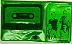
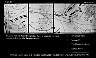
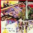
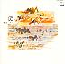

FAC 1
|
Additional Notes:
This was a poster, printed yellow on black, for gigs [May/June 78] at The Factory, Manchester, and the featured bands were Joy Division, Durutti Column, the Tiller Boys, Cabaret Voltaire, Jilted John, Big in Japan, and Manicured Noise.
FAC 2
|
Contents:
2x7": UK 1978 (Factory FAC 2) [silver gatefold sleeve] [disc one - Aside] 2:50 JOY DIVISION - Digital 3:51 JOY DIVISION - Glass [disc one - Beside] 4:57 DURUTTI COLUMN - No Communication 3:16 DURUTTI COLUMN - Thin Ice (Detail) [disc two - Seaside] 1:43 JOHN DOWIE - Acne 1:53 JOHN DOWIE - Idiot 2:27 JOHN DOWIE - Hitler's Liver [disc two - Decide] 3:15 CABARET VOLTAIRE - Baader Meinhof 3:28 CABARET VOLTAIRE - Sex in Secret ~ Everything ~ IS REPAIRABLE ~ EVERYTHING ~ IS BROKEN
Additional Notes:
A double E.P, with stickers. 5000 copies pressed.
FAC 3
|
Additional Notes:
This was a black and white poster, advertising a gig by Cabaret Voltaire, Joy Division, and the Tiller Boys. A piece by Paul Morley in the liner notes for FACT 400 suggests that FAC 3 may have been originally allocated to a Tiller Boys 12".
FAC 4
|
Additional Notes:
This was a poster publicising upcoming appearances by the Adverts, Alpha Omega, the Distractions, the Doomed, Human League, Magazine, Manicured Noise, Massagna, the Undertones, and the annual Factory Christmas party. This poster was later printed in The Face magazine.
|
|
FAC 5
|
Contents:
7": UK 1979 (Factory FAC 5) 3:14 All Night Party 3:10 The Thin Boys ~ FAC 5 Lenny-1 ~ FAC 5 Anthony-2
Additional Notes:
Limited edition of 5000, 1000 of which have sticker saying 'ltd edition on poor quality vinyl'.
FAC 6
|
Contents:
7": UK 1979 (Factory FAC 6) [black on black thermographic sleeve] 3:32 Electricity * 3:41 Almost ** ~ FAC6 BEFORE ~ FAC6 AFTER * Produced by Paul Collister and OMD. ** Produced by Martin Hannett.
Additional Notes:
Limited edition of 5000. Housed in black on black thermographic sleeve designed by Peter Saville and printed and hand folded and glued by Roberts and Sons Printers, Chapel Street, Salford.
"Peter's idea for this sleeve originated in a thermographic machine installed in the Manchester Poly graphics Department at that time. Peter wanted to experiment with using the same colour thermo ink as the card it was printed on. Originally offered the sleeve concept to A Certain Ratio in the bar of the Royal Exchange Theatre, Manchester, who, arrogant little bastards, told him to get lost. Instead he gave the idea to OMD, became their regular designer and won countless awards for his work with them in the next few years." (AHW)
In 1980, this was reissued by DinDisc, with the A-side produced by Martin Hannett, and the artwork replaced with standard white on black printing. On this re-release, the catalogue number became DinDisc DIN 2, but it was still a "Factory Records Product". In 1984 a 3rd version of the 7" was issued (DinDisc DIN 2 - "A Factory Records Product") with both tracks produced by OMD and Chester Valentino in the versions found on OMD's debut LP.
FAC 7
|
Additional Notes:
Grey paper and envelopes, plus visiting cards (the latter on onion skin paper) with thermographic ('braille') grey printing / first logo. Only the envelopes have 'FAC 7' on them.
FAC 8
|
Additional Notes:
Also referred to as the 'Menstrual Egg-Timer'.
Only one prototype was made by Linder, singer of 'Ludus', who was also known as an early girlfriend of Morrissey (!).
The egg timer looks like an abacus, and is described in one of the early Factory newsletters as 'A four bar abacus, seven beads to the row, final five blood soaked lint.'
FAC 9
|
Contents:
8mm: UK 1979 (Factory FAC 9)
17:00 JOY DIVISION *
?:?? A CERTAIN RATIO - All Night Party **
?:?? LUDUS - Red Dress **
12:00 No City Fun ***
* Footage from Unknown Pleasures rehearsals [Mar-Apr 79] with interview
[23 Mar 79], and music from concert at Bowdon Vale [14 Mar 79].
** Inclusive soundtrack.
*** Based on Manchester City Fun fanzine with soundtrack from Unknown
Pleasures tracks.
Additional Notes:
The Factory Flick was a film exhibition held at Scala Cinema, London [13 Sep 79].

|
FACT 10
|
Contents:
LP: UK 1979 (Factory FACT 10) CS: UK 1981 (Factory FACT 10C) CS: UK 1985 (Factory FACT 10C) [boxed] CD: UK 1986 (Factory FACD 10) * 3:28 Disorder 4:43 Day Of The Lords 3:00 Candidate 4:23 Insight 4:45 New Dawn Fades 3:53 She's Lost Control 3:50 Shadowplay 2:35 Wilderness 2:12 Interzone 5:52 I Remember Nothing ~ This is the way ~ Step inside * First edition with car carry case.
Additional Notes:
Michael Eastwood advises that there is a FAC 10P - the original large promo poster for Unknown Pleasures.
FAC 11
|
Contents:
12": UK 1980 (Factory FAC 11) 10:11 English Black Boys 8:20 See Them A-Come ~ Soon Come Denis - Thanks * ~ For J Anderton ** * Denis refers to Denis Bovell, the reggae producer who also produced this 12". ** J Anderton is James Anderton, the disputed head of Manchester Police.
Additional Notes:
FAC 12
|
Contents:
7": UK 1979 (Factory FAC 12) 3:20 Time Goes By So Slow 3:07 Pillow Fight ~ FAC 12 + 17 ~ FAC 12 + 13
FAC 13
|
Contents:
7": UK 1979 (Factory FAC 13)
3:35 Transmission
3:59 Novelty
~ And How I'll Never Know
~ Just Why or Understand
12": UK 1980 (Factory FAC 13.12)
3:35 Transmission
3:59 Novelty
~ I've seen the real atrocities
~ Buried in the sand
Additional Notes:
FACT 14
|
Contents:
LP: UK 1980 (Factory FACT 14) [sandpaper sleeve and bonus flexi-disc] * LP: UK 1980 (Factory FACT 14) [black sleeve] **** CS: UK 1986 (Factory FACT 14C) [boxed] ** CD: UK 1988 (Factory FACD 14) *** 3:01 Sketch For Summer 5:08 Requiem For A Father 5:30 Katharine 5:02 Conduct 2:28 Beginning 1:38 Jazz 2:24 Sketch For Winter 2:23 Collette 4:12 In "D" 2:25 Sketch For Winter **** 7": UK 1980 (Factory FACT 14C) [flexi-disc] * 3:42 First Aspect of the Same Thing 2:59 Second Aspect of the Same Thing CD: UK 1996 (Factory Once FACDO 14 / London 828 829-2) **** 3:01 Sketch For Summer 5:08 Requiem For A Father 5:30 Katharine 5:02 Conduct 1:39 In "D" 1:38 Jazz 2:24 Sketch For Winter 2:23 Collette 2:25 Sketch For Winter **** 3:49 Lips That Would Kiss ***** 3:04 Madeleine ***** 3:42 1st Aspect Of The Same Thing 2:59 2nd Aspect Of The Same Thing 1:49 Sleep Will Come ****** 3:35 Experiment In Fifth ******* * Martin Hannett's 'Testcard'. Shares the same number as the following. ** With sandpaper insert. *** Released as part of FACD 224. **** LP repressing and Factory Once CD has additional version with less reverb & more phasing. ***** From Lips That Would Kiss - BL: Factory Benelux FBN 2 ****** From From Brussels With Love compilation - BL: Crepuscule TWI 007 ******* From The Fruit of the Original Sin - BL: Crepuscule TWI 035
Additional Notes:
Several label listing errors on Factory Once CD.
FAC 15
|
Additional Notes:
Event / poster (300 printed) for the Leigh Festival, August 27th 1979, titled 'Zoo Meets Factory Halfway'. Festival site - Plank Lane, Leigh. Poster designed by Peter Saville.
'Zoo Records and Factory Records bring you the flesh that brought you the vinyl'. Features The Distractions, Echo and the Bunnymen, X-O-Dus, OMD, Elti-Fits, Crawling Chaos, Lori and the Chameleons, A Certain Ratio, The Teardrop Explodes, and Joy Division.
Leigh is the midpoint between Manchester and Liverpool (Zoo's home).
|  |
FACT 16C
|
Contents:
CS: UK 1980 (Factory FACT 16C) *
CS: UK 1985 (Factory FACT 16C) [boxed]
[The Graveyard] **
2:47 Do The Du (casse)
2:17 Faceless
2:49 Crippled Child
3:16 Choir
3:25 Flight
2:09 I Feel
2:25 Strain
[The Ballroom] ***
3:26 All Night Party
3:36 Oceans
3:13 The Choir
3:05 The Fox
2:15 Suspect
4:56 Flight
3:27 Genotype/Phenotype
* First 400 copies in orange pouch with insert. Later copies in
blue, green, brown, red, and grey pouches.
** Produced by Martin Hannett at Graveyard Studios, September 15/16 1979.
*** All titles on this side recorded live by Jeff Hooper and Tony
Wilson at The Electric Ballroom, London, October 26, 1979.
Additional Notes:
FAC 17
|
Contents:
7": UK 1980 (Factory FAC 17)
5:36 Sex Machine
6:53 Berlin
~ Factory Outing to the Seaside Part (1)
~ Das Ist Ein Porken Primen Kutten
FAC 18
|
Contents:
7": UK 1980 (Factory FAC 18) [tracing paper sleeve] * 4:16 Girls Don't Count 4:30 Knew Noise 4:00 Up to You ~ A Factory Outing to the Seaside. Part Two ~ West Coast 12": UK 1980 (Factory FAC 18-12) ** 4:16 Girls Don't Count 4:30 Knew Noise 4:00 Up to You * Assembled in a workshop for the deaf. ** Available in three different sleeves featuring the (then) girlfriends of the band members.
Additional Notes:
Produced by Ian Curtis & Rob Gretton.
FAC 19
|
Contents:
7": UK 1981 (Factory FAC 19) * 3:06 It's Hard to be an Egg 2:50 Mind Sketch ~ Ba Sa Lo Ha ~ Humour thy Father and Mother * White vinyl, yellow label, feather on clear sleeve.
FAC 20
|
Additional Notes:
A film, never made, which was to feature most of the Factory roster, but mainly A Certain Ratio and The Distractions attempting various forms of terrorism around Manchester, kidnapping Ian Curtis and blowing up Joy Division (!).
FAC 21
|
Additional Notes:
Badge bearing the 'Fractured Music' logo, Fractured Music being Joy Division's publishing arm.
2 editions. 400 made in maroon, then 200 in black, manufactured by Johnson's Engravers, Leeds.
"From an original idea by Durutti Column guitarist Dave Rowbotham who, late one night in Strawberry studios, suggested Factory do a badge 'like a prefect's badge, you know, enamel'. Dave was later to die in a vicious axe murder that was memorialised in the Happy Mondays song, 'Cowboy Dave.' "(AHW)

|
FAC 22
|
Contents:
12": UK 1980 (Factory FAC 22)
[Hipside]
6:00 Flight
[Flipside]
2:36 Blown Away
3:09 And Then Again
~ King Clone
~ The Clone Ranger
12": UK 1980 (Factory FAC 22) *
[Hipside] **
2:36 Blown Away
[Flipside] **
6:00 Flight
3:09 And Then Again
~ Too Young To Know
~ Too Wild to Care
* Identified as Flight, although A-side and front cover
is Blown Away. Probably an odd pressing.
** These are based on the matrix, although the centre label
has the following contents listed: Flipside: Blown Away,
Hipside: Flight / And then Again.
Additional Notes:

|
FAC 23
|
Contents:
7": UK 1980 (Factory FAC 23) *
3:25 Love Will Tear Us Apart
3:25 These Days
3:14 Love Will Tear Us Apart *
~ Don't disillusion me
~ I've only got record shops left
12": UK 1980 (Factory FAC 23.12)
3:25 Love Will Tear Us Apart
3:25 These Days
3:14 Love Will Tear Us Apart *
* Also referred to as Love Will Tear Us Apart (Again). Did
not appear on later 7" releases (need to confirm).
Additional Notes:
33rpm B-side on original 7" release.
FACT 24
|
Contents:
2xLP: UK 1980 (Factory FACT 24) [disc one] 4:32 DURUTTI COLUMN - For Mimi 5:23 DURUTTI COLUMN - For Belgian Friends 4:41 DURUTTI COLUMN - Self-Portrait 5:48 KEVIN HEWICK - Rubble 2:27 KEVIN HEWICK - 1940 3:27 KEVIN HEWICK - A Little Feeling 2:53 KEVIN HEWICK - Forget 3:10 KEVIN HEWICK - Morphia 4:15 KEVIN HEWICK - The Enchanted Kiss 2:51 KEVIN HEWICK - Haystack [disc two] 3:16 BLURT - Puppeteer 7:16 BLURT - Dyslexia 2:57 BLURT - Some Come 4:25 BLURT - Benighted 6:07 ROYAL FAMILY AND THE POOR - Vaneigem Mix * 6:07 ROYAL FAMILY AND THE POOR - Death Factory * 6:35 ROYAL FAMILY AND THE POOR - Rackets * ~ For Who it Says ~ Yip Yip Yip ~ N.A.R.G ** ~ The Mode of Production Etc. * A ROYAL FAMILY AND THE POOR pseudotrack - 'Dirge' - precedes each of these Tracks ** Stands for 'Not A Real Gentleman'.
FACT 25
|
Contents:
LP: UK 1980 (Factory FACT 25) CS: UK 1980 (Factory FACT 25C) CS: UK 1985 (Factory FACT 25C) [boxed] * CD: UK 1986 (Factory FACD 25) ** 6:05 Atrocity Exhibition 2:52 Isolation 4:45 Passover 3:53 Colony 4:06 A Means To An End 5:50 Heart & Soul 4:26 24 Hours 6:04 The Eternal 6:08 Decades ~ Old Blue ? * With a tri-fold insert. ** First edition with 'car carry case'.
Additional Notes:
|  |
FAC 26
|
Additional Notes:
A poster advertising a gig by Durutti Column in Paris. Only a few were printed Before the concert was cancelled. The concert was also to feature A Certain Ratio, Section 25, and A Boy Alone, at Bataclan, 50 Boulevard Voltair, Paris 750011, on Sunday 27th April 1980.
'Et alors, Factory Records emporte a Paris la nouvelle musique Anglais a la recherche du temps avenir...'
FAC 27
|
Additional Notes:
An alternative sleeve for FAC 17, but never taken up.
FAC 159 states 'Cancelled Saville/Gretton revenge programme project for alternative FAC 17 sleve. £200.00' (?)
FAC 28
|
Contents:
7": UK 1980 (Factory FAC 28) [flexi-disc] 7": UK 1980 (Factory FAC 28) [test pressing] * 3:40 Komakino 2:50 Incubation 1:55 As You Said ** * Track is untitled on the flexi, but this is the correct name. Has also been called And Then Again and Incubation 2 (or B). ** Pressed in light green vinyl. Very few exist (<5 ?).
Additional Notes:
This flexidisc was given away free in Record Stores back in 1980, supposedly available forever.
25000 copies were pressed for the first run.
Flexidisc pressed by Lyntone in the UK, and Evatone in the USA. The latter may be a USA only release (?). FACTUS 28 anyone?
FAC 29
|
Contents:
7": UK 1980 (Factory FAC 29) 3:31 Night Shift 4:39 I Wish I Could Speak Your Language ~ Factory Outing To The Low Country Part One
FACT 30
|
Contents:
CS: UK 1980 (Factory FACT 30) 23:40 SID VICIOUS - Interview 7:05 STEVE JONES - Interview 7:43 PAUL COOK - Interview 4:12 JOHNNY ROTTEN - Interview ?:?? MALCOLM McLAREN's GRANDMOTHER - Interview ~ Would everyone please wash their hands before...
Additional Notes:
Interviews by Judy Vermorel recorded during 1977.
Cassette label states 'A Factory Records Documentary Cassette', misc credits, and the pseudo-matrix message above.
Packaged as a gold (mine is grey!) cassette with black label and red printing, packaged in a black vinyl pouch with red printing (!). Possibly also in red on purple satin pouch, including a Factory christmas card. Need to confirm.
FAC 31
|
Contents:
7": UK 1981 (Factory FAC 31)
2:45 Dolphin Spurt
4:52 Goddess
~ Factory Outing to the Low Country Part Two
FAC 32
|
Contents:
7": UK 1980 (Factory FAC 32) [test pressing] 10": UK 1980 (Factory FAC 32) 12": UK 1980 (Factory FAC 32) [test pressing] * 3:54 Deaf 4:00 Not What I Expected * In fact the 10" pressed on 12" format!
FAC 33
|
Contents:
7": UK 1981 (Factory FAC 33) [gold sleeve] 4:34 Ceremony 4:35 In A Lonely Place ~ Watching Forever ~ How I Wish You Were here With Me Now 12": UK 1981 (Factory FAC 33) [green sleeve] 4:34 Ceremony 6:12 In A Lonely Place ~ Watching Love Grow Forever ~ How I Wish We Were Here With You Now 12": UK 1981 (Factory FAC 33) [cream/blue sleeve] * 4:22 Ceremony ** 6:12 In A Lonely Place ~ This is Why Events Unnerve Me ~ How I Wish We Were Here With You Now * Matrix indicates Side A as FAC 33 A2. Possibly catalogued as FAC 33T. ** Re-recorded when Gillian Gilbert joined the Band.
Additional Notes:
FAC 34
|
Contents:
7": UK 1981 (Factory FAC 34) 3:07 You're No Good 3:27 UFO 2:43 Moody ~ Overdubs in Party Press
|  |
FACT 35
|
Contents:
LP: UK 1981 (Factory FACT 35)
3:45 Felch
2:28 My Spirit
5:53 Forced Laugh
2:51 Choir
7:49 Back to the Start
3:46 The Fox
3:23 Loss
3:30 Oceans
12:45 Winter Hill
~ I Could Kneel With My Arms Open
Additional Notes:
FAC 36
|
Additional Notes:
The Advertising campaign for Closer in the United States [FACTUS 6], including 3 Rolling Stone ads [9 Jul 81].
FACT 37
|
Contents:
VHS: UK 1982 (Factory FACT 37V) [PAL/NTSC]
BETA: UK 1982 (Factory FACT 37B)
?:?? Decades
?:?? Dead Souls
?:?? Love Will Tear Us Apart
?:?? Shadowplay
?:?? Day of the Lords
?:?? Digital
?:?? Colony
?:?? New Dawn Fades
?:?? Auto-Suggestion
?:?? Transmission
?:?? Sound of Music
?:?? She's Lost Control
?:?? Walked in Line
?:?? I Remember Nothing
?:?? Love Will Tear Us Apart *
* Official promo video
Additional Notes:
First edition in flip-top packaging.
Questionable quality live footage, mostly filmed at the Apollo, Manchester [27-28 Oct 79], some from Eindhoven, Netherlands [18 Jan 80].
FACT 38
|
Contents:
VHS: UK n/a (Factory FACT 38) ?:?? Forced Laugh ?:?? Shack Up ?:?? [unknown - live from Music Machine and Heaven] ?:?? Back to the Start ?:?? Crippled Child ?:?? [unknown - TV appearances Manchester and Milan] ?:?? Tribeca ?:?? [other stuff]
Additional Notes:
Never completed. From the 'Factory Newsletter and Shareholders Analysis No. 5 September 1981':2 Hours. Early promo's 'Forced Lauch'/'Shack Up', live from Music Machine and Heaven. 'Back to the Start', 'Crippled Child', TV stuff from Manchester and Milan, M. Shambergs 13 minute 'Tribeca' from the New York loft, plus art... lots of art. Postsynched erotica by Johnson. Available by December/January, same price and arrangements as 37 in similar apropros bridge bag with G&L flip-top convertible.
All promos listed were released eventually (albeit some in edited form. The Manchester TV stuff might be ACR's Granada-Television 1981 'Celebration Show' contribution ('Forced Laugh' and 'And Then Again').
FAC 39
|
Contents:
7": UK 1981 (Factory FAC 39) * 3:50 Watching the Hydroplanes 4:17 Morbid Fear * First pressing in clear vinyl, later in black.
FACT 40
|
Contents:
2xLP: UK 1981 (Factory FACT 40) *
2xCS: UK 1985 (Factory FACT 40C) [boxed]
2xCS: UK 198? (Factory FACT 40) **
CD: UK 1989 (Factory FACD 40)
[disc one]
3:05 Exercise One
2:22 Ice Age
3:53 The Sound Of Music
3:55 Glass
4:15 The Only Mistake
2:46 Walked In Line
2:14 The Kill
2:47 Something Must Break
4:52 Dead Souls
7:34 Sister Ray ***
[disc two] ****
3:50 Ceremony
3:54 Shadowplay
4:01 Means To An End
5:05 Passover
4:01 New Dawn Fades
3:33 Transmission
3:20 Disorder
3:05 Isolation
5:22 Decades
3:53 Digital
~ The chicken won't stop
~ The chicken stops here
* Initially released in linen cloth sleeve.
** Thick plastic case with full artwork, labels and
gatefold insert identical to boxed set.
*** Recorded live Moonlight Club, London [2 Apr 1980]
**** Recorded live Birmingham University [2 May 1980],
Joy Division's last performance.
Additional Notes:
Initially intended to include a book of photographs and text, but this never appeared.
Standard UK release may exist in 3 versions (official confirmation needed); one with white embossed lettering on the front and back covers, and a Garrod & Lofthouse imprint on the back cover. Plus another regular version sans embossing and sans the Garrod & Lofthouse imprint. The last version is a double LP in a white sleeve with blue writing with labels to match.
FAC 41
|
Contents:
7": UK 1982 (Factory FAC 41) [mock leather purple/gold sleeve] 7": UK 1982 (Factory FAC 41) [mock leather green/gold sleeve] 3:03 Fairy Tales 3:31 Death is Slowly Coming ~ King Zero ~ Rattlesnake Meets Megatron in Dub
Additional Notes:

|
FACT 42
|
Contents:
2x12": IT 1981 (Factory FACT 42) * [disc one] 6:00 Flight 2:36 And Then Again (version) 3:09 Blown Away [disc two] 2:45 Do the Du 3:00 The Fox 3:07 Shack Up 2:04 Son + Heir * Possibly also released in France and Australia.
Additional Notes:
FAC 43
|
Contents:
12": UK 1982 (Factory FAC 43) 4:42 Art on 45 5:12 Dream 4:12 Dominion ~ From Auschwitz to the Ritz ~ To Heaven from the Blitz
|  |
FACT 44
|
Contents:
LP: UK 1981 (Factory FACT 44) * CS: UK 1986 (Factory FACT 44C) [boxed] ** CD: UK 1988 (Factory FACD 44) *** 5:14 Sketch for Dawn 1 3:29 Portrait for Frazer 2:16 Jacqueline 2:30 Messidor 4:34 Sketch for Dawn 2 6:47 Never Known 5:03 The Act Committed 1:57 Detail for Paul 6:36 The Missing Boy 2:49 The Sweet Cheat Gone CD: UK 1996 (Factory Once FACDO 44 / London 828 827-2) 5:14 Sketch for Dawn 1 3:29 Portrait for Frazer 2:16 Jacqueline 2:30 Messidor 4:34 Sketch for Dawn 2 6:47 Never Known 5:03 The Act Committed 1:57 Detail for Paul 6:36 The Missing Boy 2:49 The Sweet Cheat Gone 4:35 For Mimi **** 5:24 Belgian Friends **** 4:41 Self Portrait **** 4:26 One Christmas For Your Thoughts ***** 3:39 Danny ****** 3:01 Enigma ****** * With heavy stock pastel-artwork insert. ** With insert. *** Released as part of FACD 224. **** From FACT 24 ***** From Ghosts of Christmas Past / Remake compilation - BL: Crepuscule TWI 058/158/658 ****** From Enigma - FR: Sordide Sentimental SS 45005
Additional Notes:
Additional Notes:
All other tracks from original Factory FACD 44 release
"LC" is an abbreviation for the Italian anarchist slogan "La Lotta Continua" meaning "the struggle continues".
"Messidor" is the tenth month of the French Revolutionary calendar
"The Missing Boy" refers to Ian Curtis
"The Sweet Cheat Gone" is the published English title for the "Albertine disparue" volume of Marcel Proust's
FACT 45
|
Contents:
LP: UK 1981 (Factory FACT 45) * CS: UK 1986 (Factory FACT 45C) [boxed] ** 3:02 Friendly Fires 5:08 Dirty Disco 2:17 c.p. 2:32 Loose Talk (Costs Lives) 2:48 Inside Out 2:45 Melt Close 2:49 Hit 5:13 Babies In The Bardo 4:28 Be Brave 5:53 New Horizon ~ Gate Gate Paragate Parasamgate ~ Bodhi Svaha * Packaged in matchbook-like construction and printed on yellow waxed, marble interior design paper with a small red sticker with Kanji symbols at the back of the flap serving as a 'seal'. Originally to be packaged with triplefold poster inserts, which were made but not used for the initial release. ** Has a small card with song titles, printed on the same paper as on the LP version.
Additional Notes:

|
FACT 46
|
Additional Notes:
Umbrella title given to very irregular previews of 'Work in Progress' - forthcoming videos, etc. Posters exist for some of the previews.
One poster states: FAC 46. A F.C.L .75" Production - a "video-circus"
The Bluecoat, Friday 26th June, 8p.m, Admission £2.00
Part 1 Work in Progress - Section 25, A Certain Ratio, New Order, Cabaret Voltaire, etc.
Part 2 Excerpts from "Here are the Young Men" - The Joy Division Collection
Part 3 Manchester to New York Direct - An American Compilation, June 1980, Factus 5
FAC 47
|
Additional Notes:
First appears on FACT 45.
FAC 48
|
Contents:
7": UK 1982 (Factory FAC 48) 5:20 Ophelia's Drinking Song / Cathy's Clown 2:15 He Holds You Tighter ~ Milko! ~ Another Funny Animal
FAC 49
|
Contents:
12": UK 1981 (Factory FAC 49) 7:10 Little Voices 4:52 Call Me Honey 4:21 Boy ~ Sticky
FACT 50
|
Contents:
LP: UK 1981 (Factory FACT 50) CS: UK 1985 (Factory FACT 50C) [boxed] * CS: UK 198? (Factory FACT 50C) CD: UK 1986 (Factory FACD 50) ** 3:13 Dreams Never End 4:37 Truth 4:45 Senses 4:07 Chosen Time 4:33 I.C.B. 5:29 The Him 4:16 Doubts Even Here 4:20 Denial * With insert, which is identical to the standard 50C cover. ** First edition with 'car carry case', apparently just a white cloth. The inside of the insert has the anvil logo on some editions.
Additional Notes: